The Beginning
She Was Humming at Her Desk
Mark noticed her first — a melody drifting across the office, a warmth that needed no introduction. She wasn't trying to be remarkable. She just was.
Together in Love
Immaculate Heart of Mary Parish
Teacher's Village, Diliman, Quezon City
"Forever and Ever Babe"
How It All Began
Two ordinary desks in an ordinary office — but between them, something extraordinary grew quiet and steady, like a prayer answered before it was spoken.
Mark noticed her first — a melody drifting across the office, a warmth that needed no introduction. She wasn't trying to be remarkable. She just was.
She wrote Scripture passages in her beautiful handwriting. She spoke about her family the way people speak about something sacred. He listened — and found himself not wanting the conversations to end.

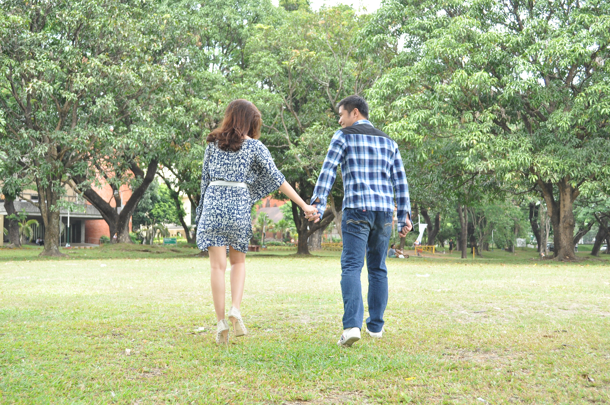
He asked her to dinner — officially to discuss a project. The project was quickly forgotten. The conversation never ended.
When Mark met Carmela's family, they didn't just welcome him — they absorbed him. "Anak," they called him. Son. He understood then why she was the way she was: she came from love, and love had made her.
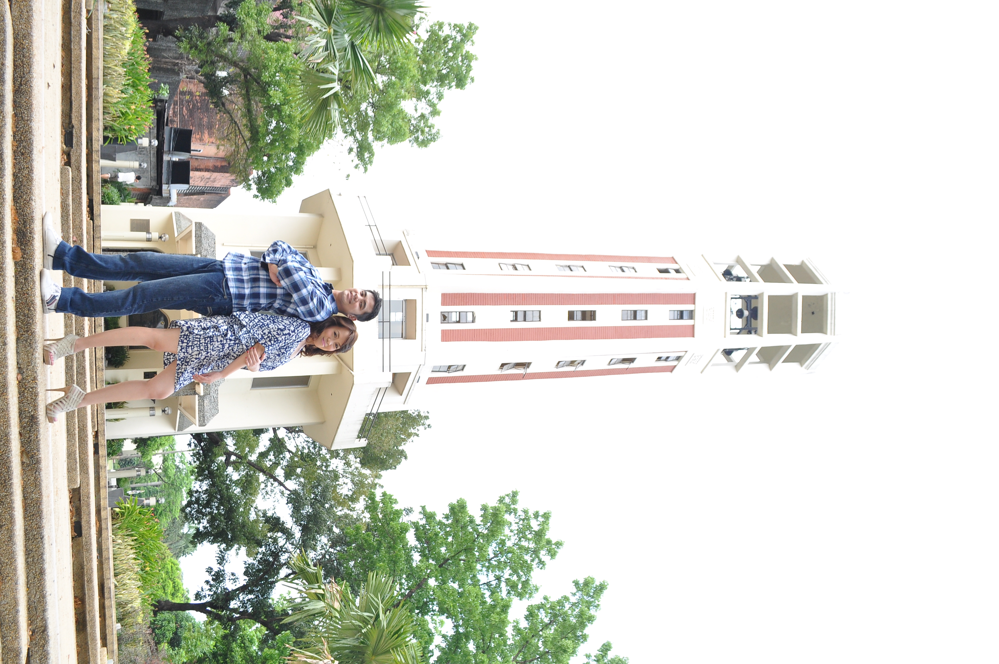
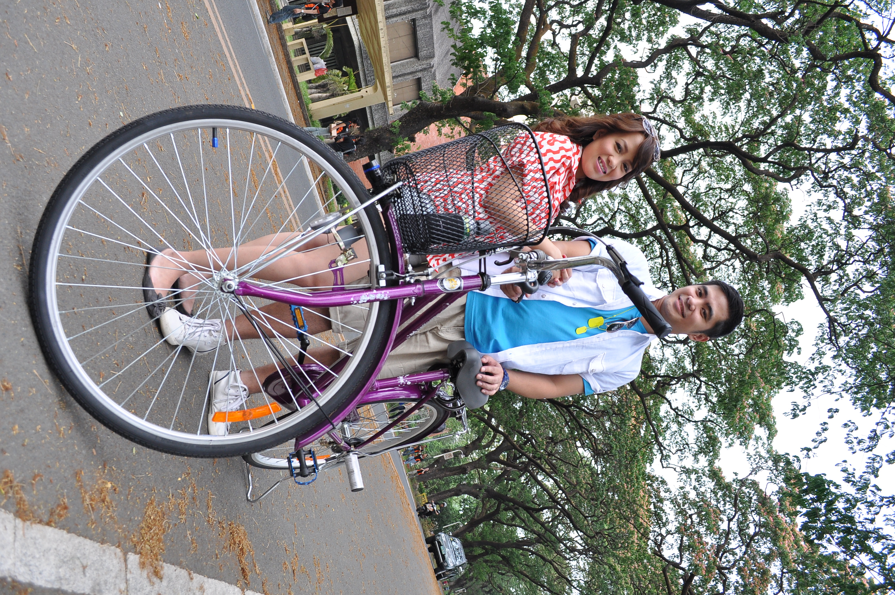
"I walked into an office one ordinary day and somehow walked into the rest of my life… Carmela — will you let me spend every day trying to deserve you?"
In the quiet chapel near her childhood home — where her grandmother had knelt in prayer for forty years — he knelt too. She said yes.
Forty Frames of Forever


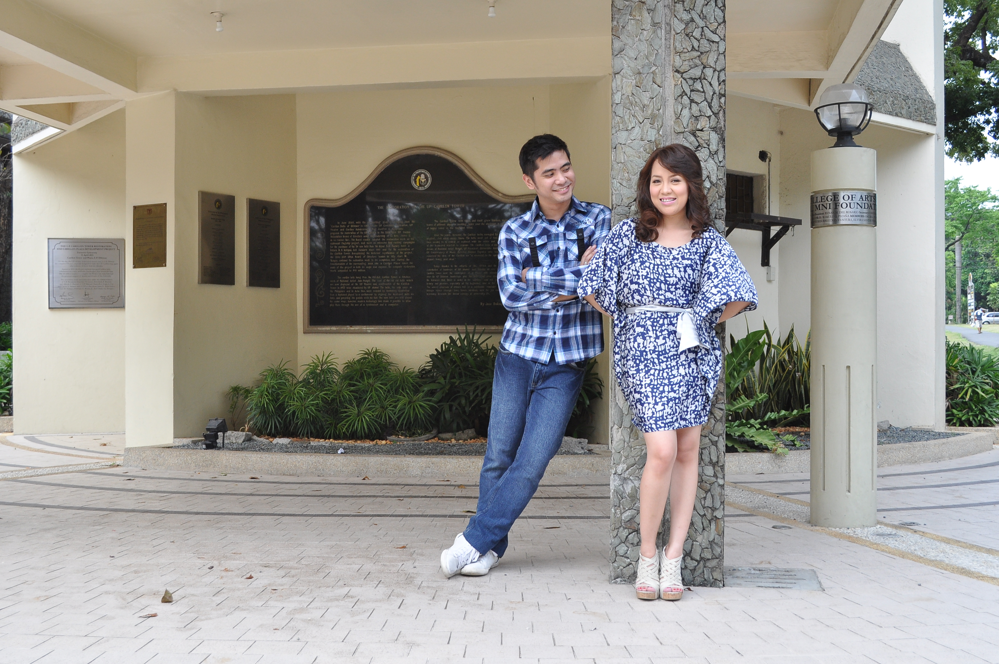
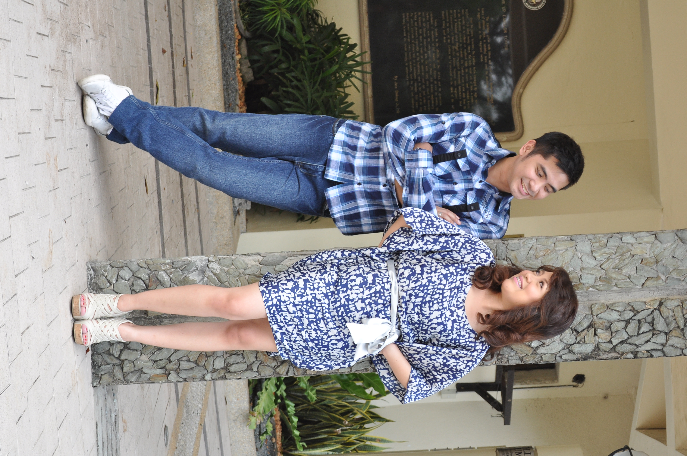
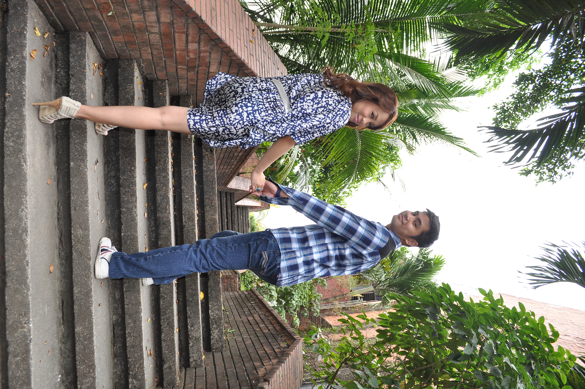
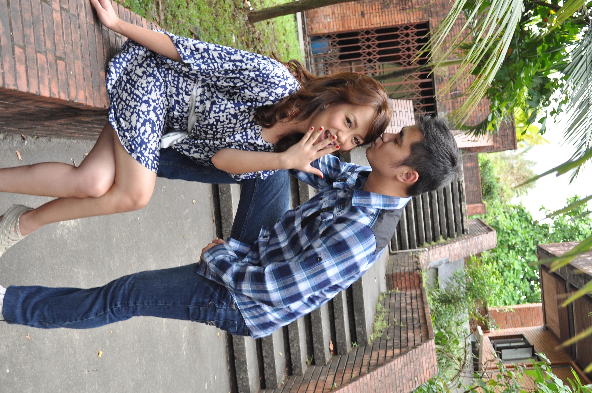
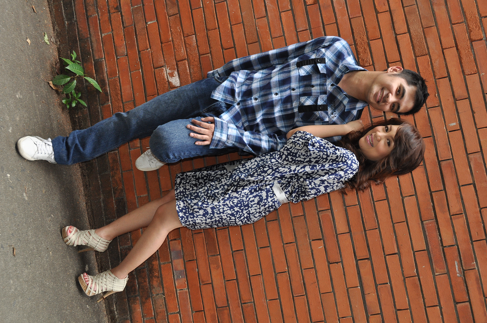
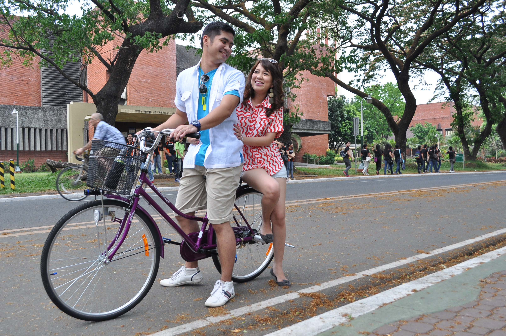
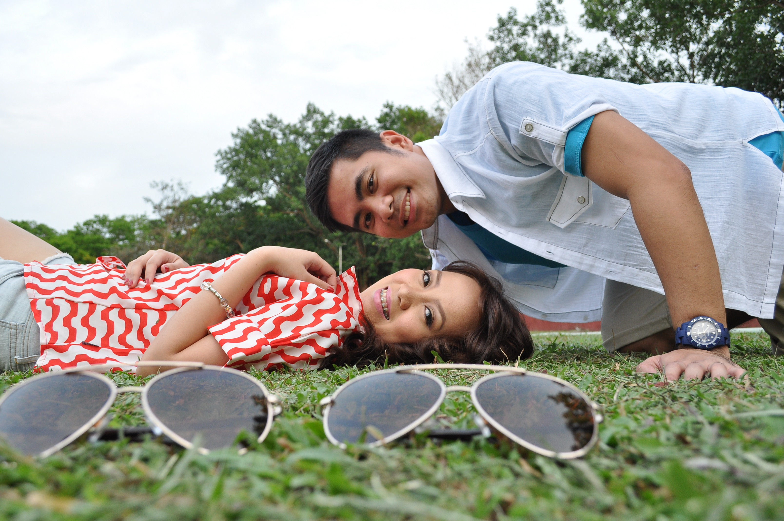
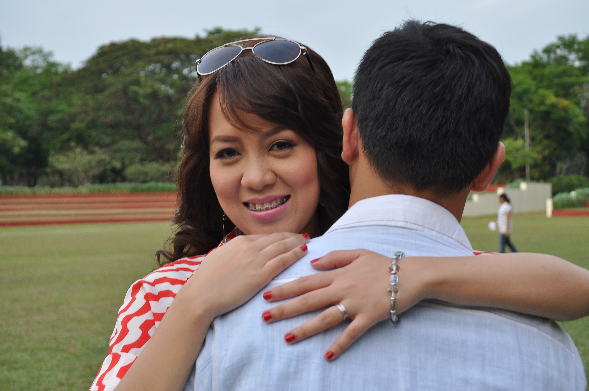
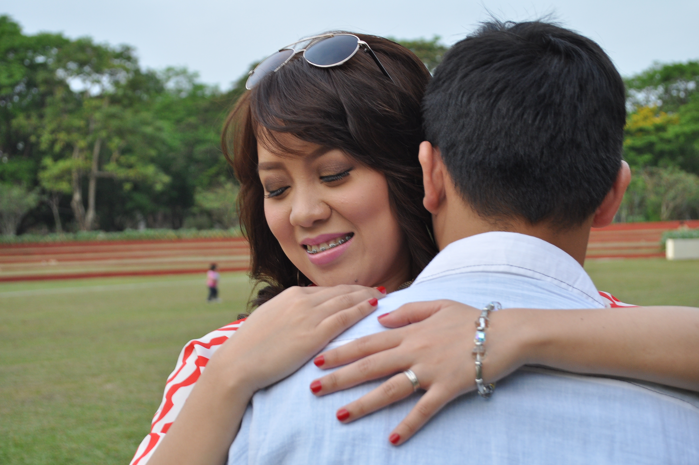
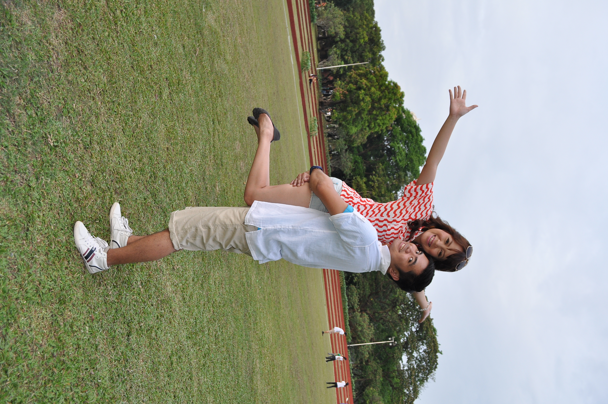


The Day It Was Made Official
Teacher's Village, Diliman, Quezon City
Royal Blue Motif
Forever
Begins Now
"Forever and Ever Babe"
Words That Bound Two Souls
The Groom
"I take you as my person — not because you are perfect, but because you are perfectly mine. I promise to love you not only on the days when love comes easily, but on the quiet, difficult days when it asks something of us. I vow to meet you halfway, always — in every argument, in every dream, in every season of our life together. When we disagree, I will choose understanding over pride. When life grows heavy, I will carry what I can so you carry less. I will fall in love with you again and again — in the morning light, in your laughter, in the way you see the world. You are not just the person I want beside me. You are the reason I want to be better. Today, tomorrow, and in every ordinary moment in between — I am yours."
The Bride
"I choose you — not just today, in the beauty of this moment, but on every day that follows. I promise to love you with patience when patience is hard, and with grace when grace doesn't come naturally. I vow to be your safe place — the one you return to, the one who stays. When life pulls us in different directions, I will always find my way back to you. I promise to listen more than I speak, to forgive more than I hold on, and to remind you — even when the world forgets — of how extraordinary you are. Our love will not always look like this moment, dressed in flowers and vows. Sometimes it will look like a quiet cup of coffee, a hand held in the dark, a choice made again and again to stay. And I will make that choice, every single day, for the rest of my life. I am yours — completely, joyfully, forever."
I walked into an office one ordinary day and somehow walked into the rest of my life. You showed me what it looks like to love fiercely — your family, your faith, your whole beautiful self. I don't want to learn how to live without that. I don't want to learn how to live without you. Carmela — will you let me spend every day trying to deserve you?— Mark, at the chapel